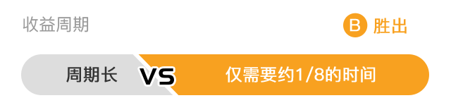
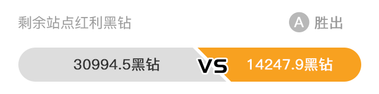
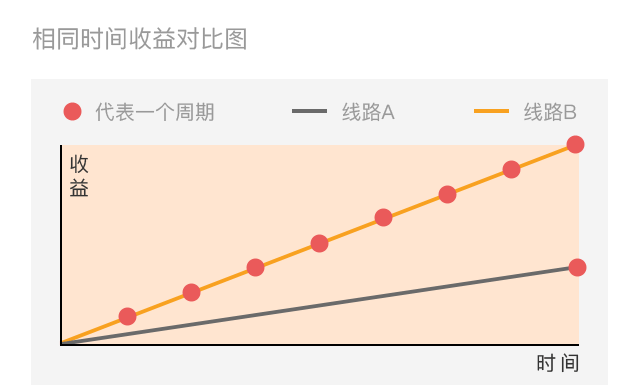

  
选择线路A
选择线路B
{{schemes[active].name}}
{{schemes[active].introduce}}
{{schemes[active].keyWords}}
周期
{{schemes[active].zhouqi}}
{{item.name}}
{{item.score}}红利黑钻
{{schemes[active].msg}}
确认选择
确认选择
由于您在初心站已经使用了燃油券或者购买了燃料，无法选择路线方案！